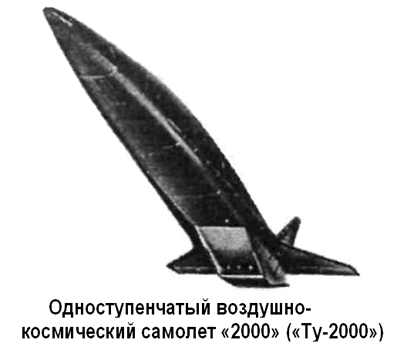

Космический бомбардировщик «Ту-2000»
Практически все работы, связанные с авиационно-космической тематикой, в ОКБ-156 Андрея Туполева были свернуты в начале 60-х годов. Вновь к этой тематике бюро вернулось в 70-е годы, когда в СССР были начаты перспективные работы над авиационными воздушно-космическими системами.
С 1968 по 1971 год в проработке у ОКБ Туполева находилось несколько технических предложений по воздушно-космическим самолетам с горизонтальным стартом и посадкой.
Взлетная масса летательных аппаратов согласно проектам достигала 300 тонн. В качестве силовой установки предлагалось использовать ЖРД на тепловыделяющих элементах с использованием ядерной силовой установки, в качестве рабочего тела — водород. Рассматривались варианты многоэтапного вывода полезных нагрузок на воздушно-космических системах, находящихся на орбите вокруг Земли, на межпланетные орбиты с использованием ионных и плазменных маршевых двигателей.
Однако в тот период основное внимание ОКБ было сосредоточено на теме многорежимных боевых самолетов. На развертывание крупномасштабных и дорогостоящих исследовательских работ по одноступенчатым воздушно-космическим системам не было ни средств, ни свободных людских ресурсов. Кроме того, до первых полетов по американской программе «Спейс Шаттл» военные не проявляли особого интереса к проектам отечественных воздушно-космических аппаратов, делая ставку на ракетные системы. Поэтому все эти оригинальные предложения ОКБ-156 не вышли из стадии эмбрионального состояния.
С появлением на Западе проектов одноступенчатых воздушно-космических систем работы по данной тематике оживились и в Советском Союзе. К середине 80-х годов совместно с ЦАГИ, ОКБ Николая Кузнецова, с другими предприятиями и организациями отечественного военно-промышленного комплекса ОКБ-156 подготовило ряд конкретных технических предложений по созданию авиационно-космической системы на базе одноступенчатого орбитального самолета с маршевой и корректирующей силовыми установками на основе ЖРД, с наземным или воздушным стартом с тяжелых самолетов-носителей.
Следующим этапом в создании одноступенчатого воздушно-космического самолета в ОКБ Туполева стало начало проектирования летательного аппарата с маршевой силовой установкой, построенной на комбинации двигателей принципиально различного типа: ТРД + ПВРД + ЖРД.
За эти годы по теме одноступенчатого орбитального воздушно-космического самолета ОКБ подготовило несколько проектов, отличавшихся различными техническими решениями в части компоновки летательного аппарата и его силовой установки. Одним из последних стал проект, получивший обозначение самолет «2000» или «Ту-2000», с комбинированной силовой установкой.

Исследования, проведенные в ОКБ Туполева, дали основание утверждать, что одноступенчатый воздушно-космический самолет способен стать реальностью, если решить, в частности, проблемы существенного повышения экономичности силовой установки и значительно поднять относительный запас топлива на взлете летательного аппарата.
По мнению конструкторов бюро, существенно повысить экономичность силовой установки можно, используя в качестве окислителя кислород воздуха, то есть применяя воздушно-реактивные двигатели. Единственным типом ВРД, который можно использовать при гиперзвуковых скоростях полета, является прямоточный воздушно-реактивный двигатель.
Использование в качестве окислителя атмосферного воздуха позволяет уменьшить секундный расход топлива, однако существенное снижение общей массы самолета может быть достигнуто только при условии работы ПВРД в широком диапазоне чисел Маха полета (широко-диапазонный ПВРД — ШПВРД). Это дает существенную разность между уменьшением массы топлива и увеличением массы конструкции, связанным с использованием ПВРД, и обеспечивает выигрыш в относительной массе полезной нагрузки.
Другим определяющим условием реализации одноступенчатого воздушно-космического самолета является использование в качестве топлива жидкого водорода. Это позволяет создать более легкие и компактные двигатели с требуемым удельным расходом топлива. Кроме того, использование хладоресурса жидкого водорода дает возможность спроектировать достаточно легкую охлаждаемую конструкцию планера и воздухозаборника, а также обеспечивать необходимые температурные режимы бортовых систем и оборудования.
Из условий применения на воздушно-космическом самолете основной разгонной силовой установки на базе ПВРД для него наиболее рационально применение комбинированной силовой установки, включающей экономичные ТРД, работающие в диапазоне скоростей, соответствующих диапазону от 0 до 2,5 Маха, ПВРД (ШПВРД), обеспечивающих разгон до 20–25 Махов, и ЖРД для доразгона до орбитальной скорости и маневрирования на орбите.
Для того чтобы одноступенчатый воздушно-космический самолет был конкурентоспособен в сравнении с другими транспортными средствами, при его проектировании необходимо обеспечить выполнение ряда требований к летным характеристикам. Он должен обладать способностью совершать взлеты и посадки со стандартных взлетно-посадочных полос длиною до 3000 метров, совершать полеты с разворотом на дозвуковой скорости после взлета для выхода в заданную точку начала разгона и перед посадкой для захода на заданный аэродром, осуществлять перелеты для изменения аэродрома базирования, быстро выполнять разгон до заданной скорости и высоты, включая выход на круговую орбиту, выполнять неоднократные орбитальные маневры, выполнять автономный орбитальный полет продолжительностью до суток, выполнять крейсерский полет в атмосфере с гиперзвуковыми скоростями, выполнять торможение со снижением при возвращении с орбиты, в процессе разгона до орбитальных параметров и в процессе снижения выполнять маневрирование для прохода заданной трассы и выхода на заданную орбиту и заданный аэродром, изменять плоскость орбитального полета.
Принципиальная новизна разрабатываемого летатель ного аппарата, отсутствие проверенных технических реше ний по ряду направлений, а также необходимого набора конструкционных материалов и полуфабрикатов обуславливают необходимость поэтапной разработки и испытаний экспериментального воздушно-космического самолета. Поэтому вся программа по созданию экспериментального «Ту-2000» была разбита на два этапа: создание экспериментального гиперзвукового самолета «Ту-2000А» с максимальной скоростью полета до 5–6 Махов и создание экспериментального «ВКС» — прототипа одноступенчатого многоразового воздушно-космического самолета, обеспечивающего проведение летного эксперимента во всей области полетов, вплоть до выхода в космос.
Для воздушно-космического самолета «Ту-2000» была принята аэродинамическая схема «бесхвостка». Все элементы самолета конструктивно интегрированы вокруг силовой установки, состоящей из четырех ТРД, находящихся в хвостовой части, основного разгонного ШПВРД, расположенного под фюзеляжем в задней его части, и двух ЖРД для маневрирования в космическом пространстве, установленных между ТРД.
Самолет имеет треугольное крыло относительно небольшой площади и малого удлинения, большую роль в создании подъемной силы берет на себя фюзеляж с плоской нижней поверхностью.
Органы управления традиционные для данной схемы летательного аппарата элевоны на крыле и руль поворота на киле.
Основной двигатель — ШПВРД включает в себя воздухозаборник внешне-внутреннего сжатия, регулируемые камеры сгорания с косым срезом и многоканальную систему подачи топлива. Основной разгонный режим выполняется на ШПВРД. Воздушные каналы ТРД после достижения скорости 2–2,5 Маха и начала работы ШПВРД закрываются заслонками, которые в открытом состоянии образуют входное устройство воздухозаборника ТРД.
Фюзеляж самолета большого размера в основном занят топливными баками с жидким водородом.
В носовой части фюзеляжа расположена кабина экипажа на двух членов экипажа. Система автоматического спасения экипажа обеспечивает спасение от земли до максимальных высот. Носовая часть вместе с кабиной отделяемая и прорабатывалась в двух вариантах: с отделяемой и спасаемой на парашюте кабиной экипажа и катапультируемыми креслами самолетного типа.
На экспериментальном «Ту-2000А» будут использоваться катапультируемые кресла с предварительным отделением носовой части и кабины экипажа.
За кабиной экипажа находится технический отсек радиоэлектронного оборудования, в этот же отсек убирается передняя стойка шасси. Средняя и задняя части фюзеляжа заняты топливным баком с жидким водородом. Для питания ЖРД окислителем в хвостовой части фюзеляжа установлен кислородный бак. Все двигатели в качестве горючего используют жидкий водород из единой топливной системы.
Шасси «Ту-2000А» нормальной трехточечной схемы с носовым колесом: передняя стойка со спаренными колесами малого диметра с высоким давлением в пневматиках колес, основные стойки — одноколесные, убираются в фюзеляж в отсеки в районе крыла.
Габариты «Ту-2000А»: длина — 60 метров, размах крыла — 14 метров, стреловидность крыла по передней кромке — 70, масса пустого — 40 тонн, взлетная масса — от 70 до 90 тонн.
Экспериментальный «ВКС» второго этапа должен иметь взлетную массу до 210–280 тонн. Подобный аппарат сможет доставлять на околоземную орбиту 200–400 километров полезный груз от 6 до 10 тонн. Компоновочно он будет повторять экспериментальный «Ту-2000А», но на нем планируется устанавливать более мощный ШПВРД, число ТРД увеличить до шести.
На втором этапе, помимо многоразового воздушно-космического самолета, намечалось создать варианты космического бомбардировщика «Ту-2000Б» и пассажирского гиперзвукового самолета.
«Ту-2000Б» проектировался как двухместный бомбардировщик с дальностью 10 000 километров и взлетным весом 350 тонн. Шесть двигателей с питанием на жидком водороде должны были обеспечить скорость в 6 Махов на высоте 30 километров.
До приостановки работ в 1992 году для «Ту-2000А» были изготовлены: кессон крыла из никелевого сплав, элементы фюзеляжа, криогенные топливные баки и композитные топливопроводы.
По утверждению специалистов, на сегодняшнем этапе весь объем научно-исследовательских и конструкторских работ по проекту можно выполнить за 13–15 лет с начала необходимого финансирования. Стоимость постройки одного «Ту-2000» (при затратах на опытно-конструкторские работы в 5,29 миллиарда долларов) составит около 480 миллионов долларов. Предполагаемая цена запуска — 13,6 миллиона долларов (при периодичности — 20 пусков в год).